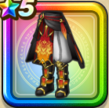

炎獅子の装束下
攻略班 7.0点 / 幻惑耐性+10%魅了耐性+5%幻惑耐性+10%魅了耐性+5%【レンジャー】スキルの体技ダメージ+1%メラ属性斬撃・体技ダメージ+5%【レンジャー】みかわし率+1%
くわしい特徴
【レベル別習得スキル】 Lv1幻惑耐性+10% Lv8きようさ+7 Lv10魅了耐性+5% Lv12【レンジャー】スキルの体技ダメージ+1% Lv15【レンジャー】みかわし率+1% Lv18メラ属性斬撃・体技ダメージ+5% Lv20幻惑耐性+10% Lv20【レンジャー】さいだいMP+5 Lv23守備力+7 Lv25魅了耐性+5% 【限界突破スキル】 1凸攻撃力+5 2凸守備力+5 3凸すばやさ+7 4凸さいだいHP+10